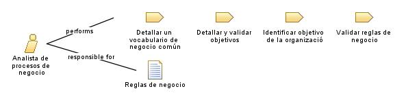

Role: Analista de procesos de negocio
El rol de Analista de Procesos de Negocio implica la responsabilidad de examinar, evaluar y mejorar los diferentes aspectos operativos de una empresa.
Relationships

Primary Performs
Detallar un vocabulario de negocio común
Detallar y validar objetivos
Identificar objetivo de la organizació
Validar reglas de negocio